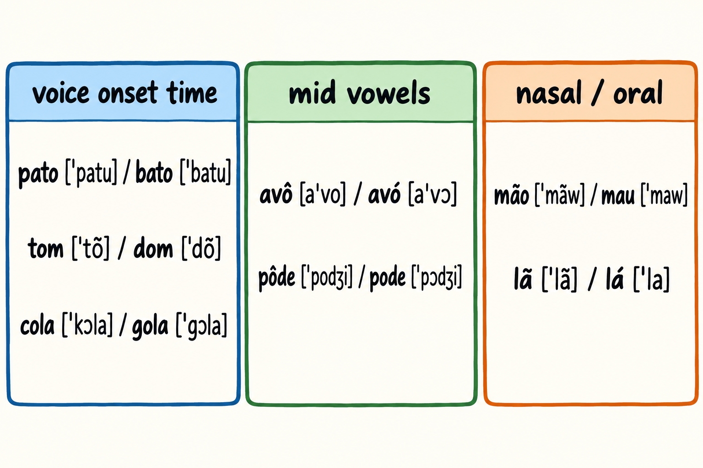

This appendix gathers three reference blocks for use alongside the chapters: a list of false friends, a set of minimal pairs for ear and mouth practice, and a short list of free resources. It is not a chapter, so it has no self-test and no review plan. Every example here is the author's illustration unless a source is cited, and none of it has been confirmed by a native speaker.
These nine items form the core. Each one has a source for its meaning, and each one is a place where an English speaker is tempted to read a Portuguese word as its English look-alike.
Author's illustrations of the core in use:
The source for this block is a list of 22 false cognates [F47]. Its summary supports the existence of the list and not each item one by one, so treat the eight items below as a reading list to check, not as eight proven claims. Look each one up in a Portuguese dictionary before you rely on it.
As the author's suggestion, add one of these to your error deck only after it has tripped you at least once. A false friend that has never caused a mistake does not earn a card.
The six words below are the author's suggestions. They carry no source claim, and they are pending dictionary review. Do not treat them as established false friends until you have checked them.

The pairs below are for practice of the contrasts in chapter 3. They are the author's illustrations, with broad transcriptions in square brackets. These forms were not confirmed by a native speaker, so use them as a drill sheet and check them against a recording when you can.
Say each pair slowly, then say the word in a short sentence of your own. The first word of each pair starts with the voiceless stop, and the second starts with the voiced one.
The study behind the voice onset time idea measured the reverse direction, Brazilians learning English [F24]. For that reason, this block is practice material and an inference for English speakers, not a finding about them.
The mid vowels contrast closed against open. Check which is which before you say them.
The difficulty with Portuguese mid vowels for American English speakers is documented, together with overcorrection [F18]. Notice that the t and d sounds become affricates only before an "ee" sound. In pôde and pode the final e is that sound, so the d is palatalized, while a final o does not trigger it.
Say the nasal member without closing your mouth on an m or an n at the end. The nasalization lives in the vowel itself.
The outline of this book lists four sets of open materials from the COERLL project at the University of Texas at Austin, released under Creative Commons licences: Língua da Gente, Conversa Brasileira, Portuguese Communication Exercises and ClicaBrasil. The source behind this block supports only the existence of open resources under Creative Commons and the retirement of Brazilpod [F88]. The four titles are named here because the outline lists them, not because that source proves each one. Check the current licence and availability of each before you plan a study week around it.
For a reference grammar written in English and focused on Brazilian Portuguese, the book uses Modern Brazilian Portuguese Grammar, third edition, 2022 [F109]. It is a reference to dip into when a chapter points at a rule, not a text to read from start to finish.
This book has no audio, and that is a real limit for a language learned by ear. Commercial audio courses are mentioned only as a contrast. One example is the Pimsleur course, which is built on lessons of about 30 minutes [F110]. Nothing here is a recommendation to buy, and nothing here is a comparison of results.